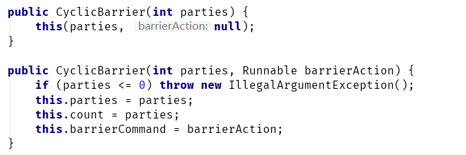
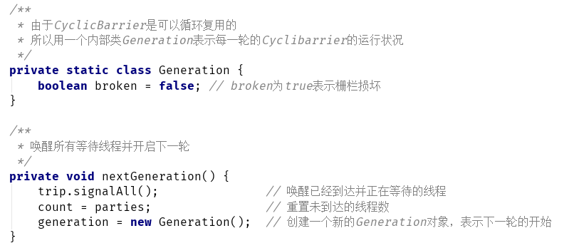
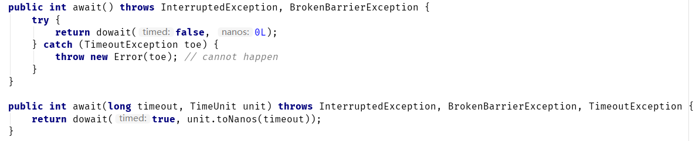
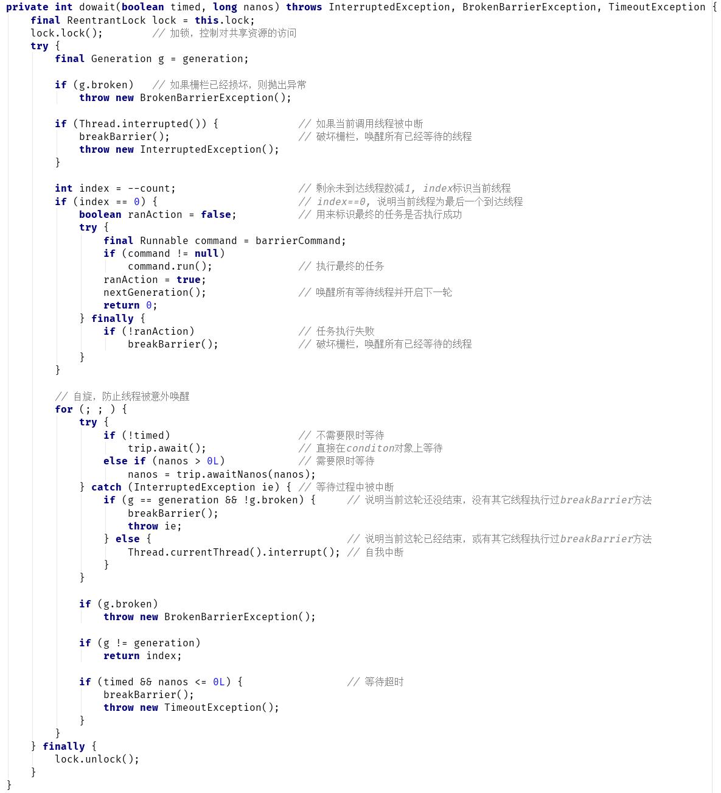
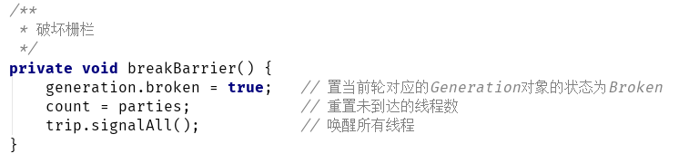
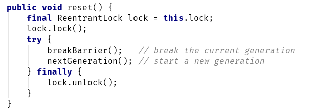
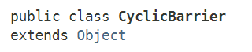
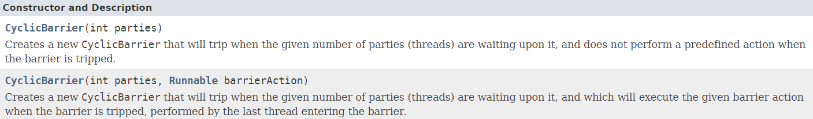
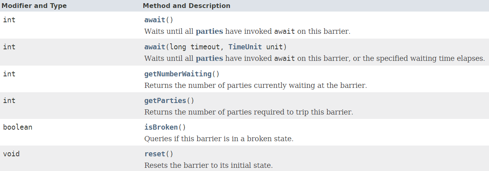

CyclicBarrier是一个辅助同步器类，在JDK1.5时随着J.U.C一起引入。
这个类的功能和我们之前介绍的CountDownLatch有些类似。我们知道，CountDownLatch是一个倒数计数器，在计数器不为0时，所有调用await的线程都会等待，当计数器降为0，线程才会继续执行，且计数器一旦变为0，就不能再重置了。
CyclicBarrier可以认为是一个栅栏，栅栏的作用是什么？就是阻挡前行。
顾名思义，CyclicBarrier是一个可以循环使用的栅栏，它做的事情就是：
让线程到达栅栏时被阻塞(调用await方法)，直到到达栅栏的线程数满足指定数量要求时，栅栏才会打开放行。
这其实有点像军训报数，报数总人数满足教官认为的总数时，教官才会安排后面的训练。
可以看下面这个图来理解下:
一共4个线程A、B、C、D，它们到达栅栏的顺序可能各不相同。当A、B、C到达栅栏后，由于没有满足总数【4】的要求，所以会一直等待，当线程D到达后，栅栏才会放行。
从CyclicBarrier的构造器，我们也可以看出关于这个类的一些端倪，CyclicBarrier有两个构造器：
构造器一：
这个构造器的参数parties就是之前说的需要满足的计数总数。
构造器二：
这个构造器稍微特殊一些，除了指定了计数总数外，传入了一个Runnable任务。
Runnable任务其实就是当最后一个线程到达栅栏时，后续立即要执行的任务。
比如，军训报数完毕后，总人数满足了要求，教官就会开始命令大家执行下一个任务，这个【下一个任务】就是这里的Runnable。
我们来看一个CyclicBarrier的示例，来理解下它的功能。
假设现在有这样一个场景：
5个运动员准备跑步比赛，运动员在赛跑前会准备一段时间，当裁判发现所有运动员准备完毕后，就举起发令枪，比赛开始。
这里的起跑线就是屏障，运动员必须在起跑线等待其他运动员准备完毕。
public class CyclicBarrierTest {
public static void main(String[] args) {
int N = 5; // 运动员数
CyclicBarrier cb = new CyclicBarrier(N, new Runnable() {
@Override
public void run() {
System.out.println("****** 所有运动员已准备完毕，发令枪：跑！******");
}
});
for (int i = 0; i < N; i++) {
Thread t = new Thread(new PrepareWork(cb), "运动员[" + i + "]");
t.start();
}
}
private static class PrepareWork implements Runnable {
private CyclicBarrier cb;
PrepareWork(CyclicBarrier cb) {
this.cb = cb;
}
@Override
public void run() {
try {
Thread.sleep(500);
System.out.println(Thread.currentThread().getName() + ": 准备完成");
cb.await(); // 在栅栏等待
} catch (InterruptedException e) {
e.printStackTrace();
} catch (BrokenBarrierException e) {
e.printStackTrace();
}
}
}
}
执行上面的程序，可能的输出结果如下：
运动员[3]: 准备完成
运动员[1]: 准备完成
运动员[0]: 准备完成
运动员[2]: 准备完成
运动员[4]: 准备完成
****** 所有运动员已准备完毕，发令枪：跑！******
从输出可以看到，线程到达栅栏时会被阻塞(调用await方法)，直到到达栅栏的线程数满足指定数量要求时，栅栏才会打开放行。
我们知道，线程在阻塞过程中，可能被中断，那么既然CyclicBarrier放行的条件是等待的线程数达到指定数目，万一线程被中断导致最终的等待线程数达不到栅栏的要求怎么办？
CyclicBarrier一定有考虑到这种异常情况，不然其它所有等待线程都会无限制地等待下去。
那么CyclicBarrier是如何处理的呢？
我们看下CyclicBarrier的await()方法：
public int await() throws InterruptedException, BrokenBarrierException {
//...
}
可以看到，这个方法除了抛出InterruptedException异常外，还会抛出BrokenBarrierException。
BrokenBarrierException表示当前的CyclicBarrier已经损坏了，可能等不到所有线程都到达栅栏了，所以已经在等待的线程也没必要再等了，可以散伙了。
出现以下几种情况之一时，当前等待线程会抛出BrokenBarrierException异常：
另外，只要正在Barrier上等待的任一线程抛出了异常，那么Barrier就会认为肯定是凑不齐所有线程了，就会将栅栏置为损坏（Broken）状态，并传播BrokenBarrierException给其它所有正在等待（await）的线程。
我们来对上面的例子做个改造，模拟下异常情况：
public class CyclicBarrierTest {
public static void main(String[] args) throws InterruptedException {
int N = 5; // 运动员数
CyclicBarrier cb = new CyclicBarrier(N, new Runnable() {
@Override
public void run() {
System.out.println("****** 所有运动员已准备完毕，发令枪：跑！******");
}
});
List<Thread> list = new ArrayList<>();
for (int i = 0; i < N; i++) {
Thread t = new Thread(new PrepareWork(cb), "运动员[" + i + "]");
list.add(t);
t.start();
if (i == 3) {
t.interrupt(); // 运动员[3]置中断标志位
}
}
Thread.sleep(2000);
System.out.println("Barrier是否损坏：" + cb.isBroken());
}
private static class PrepareWork implements Runnable {
private CyclicBarrier cb;
PrepareWork(CyclicBarrier cb) {
this.cb = cb;
}
@Override
public void run() {
try {
System.out.println(Thread.currentThread().getName() + ": 准备完成");
cb.await();
} catch (InterruptedException e) {
System.out.println(Thread.currentThread().getName() + ": 被中断");
} catch (BrokenBarrierException e) {
System.out.println(Thread.currentThread().getName() + ": 抛出BrokenBarrierException");
}
}
}
}
可能的输出结果：
运动员[0]: 准备完成
运动员[2]: 准备完成
运动员[1]: 准备完成
运动员[3]: 准备完成
运动员[3]: 被中断
运动员[4]: 准备完成
运动员[4]: 抛出BrokenBarrierException
运动员[0]: 抛出BrokenBarrierException
运动员[1]: 抛出BrokenBarrierException
运动员[2]: 抛出BrokenBarrierException
Barrier是否损坏：true
这段代码，模拟了中断线程3的情况，从输出可以看到，线程0、1、2首先到达Brrier等待。
然后线程3到达，由于之前设置了中断标志位，所以线程3抛出中断异常，导致Barrier损坏，此时所有已经在栅栏等待的线程（0、1、2）都会抛出BrokenBarrierException异常。
此时，即使再有其它线程到达栅栏（线程4），都会抛出BrokenBarrierException异常。
注意：使用
CyclicBarrier时，对异常的处理一定要小心，比如线程在到达栅栏前就抛出异常，此时如果没有重试机制，其它已经到达栅栏的线程会一直等待（因为没有还没有满足总数），最终导致程序无法继续向下执行。
CyclicBarrier有两个构造器：CyclicBarrier cb = new CyclicBarrier(10);

构造器内部的各个字段含义如下：
| 字段名 | 作用 |
|---|---|
| parties | 栅栏开启需要的到达线程总数 |
| count | 剩余未到达的线程总数 |
| barrierCommand | 最后一个线程到达后执行的任务 |
CyclicBarrier 并没有自己去实现AQS框架的API，而是利用了ReentrantLock和Condition。
public class CyclicBarrier {
private final ReentrantLock lock = new ReentrantLock();
private final Condition trip = lock.newCondition();
// 栅栏开启需要的到达线程总数
private final int parties;
// 最后一个线程到达后执行的任务
private final Runnable barrierCommand;
// 剩余未到达的线程总数
private int count;
// 当前轮次的运行状态
private Generation generation = new Generation();
// ...
}
需要注意的是generation这个字段：

我们知道，CyclicBarrier 是可以循环复用的，所以CyclicBarrier 的每一轮任务都需要对应一个generation 对象。generation 对象内部有个broken字段，用来标识当前轮次的CyclicBarrier 是否已经损坏。
nextGeneration方法用来创建一个新的generation 对象，并唤醒所有等待线程，重置内部参数。
我们先来看下await方法：

可以看到，无论有没有超时功能，内部都是调了dowait这个方法：

dowait方法并不复杂，一共有3部分：
破坏栅栏用的是breakBarrier方法：

再来看下CyclicBarrier的reset方法：

该方法先破坏栅栏，然后开始下一轮（新建一个generation对象）。
类声明：

构造器声明：

接口声明：
